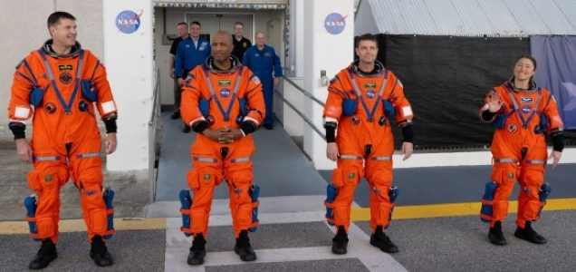
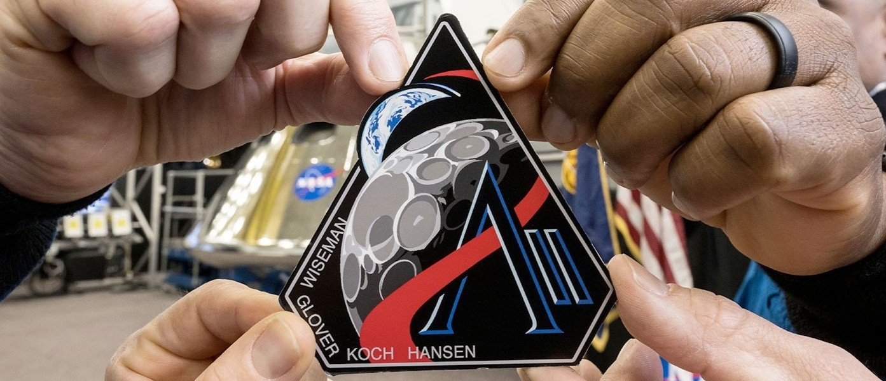

Changing NASA’s Commitments to Representation
NASA once framed the Artemis program as a turning point for national inclusion, promising to land “the first
woman and the first person of color” on the Moon(6). This message mattered because the most competitive
roles in space exploration haven’t been equally open to everyone, and those gaps have been visible for a
long time. Women make up about 35% of NASA’s workforce but only 25% of its science and engineering
positions, and racial and ethnic minorities remain underrepresented in senior leadership, with audits
showing only 1–2% gains over many years(9). When NASA puts goals like this out in public, it sends a
straightforward signal about who is welcome in space exploration and who feels encouraged to pursue those
roles.
In 2025, NASA removed this DEI focused language following federal restrictions on diversity initiatives(6).
Several former NASA leaders and scientists have said that cutting back DEI programs could hurt future
diversity and innovation because it makes it harder to recruit people and leaves many feeling less
welcome(11). This change brings me back to the main question behind my project: what happens to
representation
and public trust when a taxpayer funded agency steps away from clear DEI commitments.
Why DEI Rollbacks Matter for Public Trust
As a taxpayer funded institution, NASA’s credibility depends on representing the nation it serves. Pulling
back on these commitments can easily come across as exclusionary, which can damage trust in NASA and
reinforce doubts among communities that have already struggled to feel included in STEM(10).

Key Events
• 2025 executive orders ending federal DEI programs(2)
• NASA’s removal of Artemis DEI language (“first woman and first person of color”), with the edit occurring
on March 16, 2025, confirmed by the Wayback Machine(6)
• NASA’s public justification that it was “updating its language to better reflect the core mission…
returning astronauts to the lunar surface”(6)
• Closure of all NASA DEIA offices and contracts(2,3)
• National trend of DEI retrenchment (MIT example, NIH/NSF impacts)(2)
• Inconsistent transition: some NASA webpages still displayed the original DEI language, showing an abrupt
and uneven rollback(6)
• Artemis program timeline milestones: Artemis I (2022), Artemis II (diverse crew), Artemis III delayed to
no earlier than mid 2027(6).
Key Figures
• Janet Petro - Acting NASA Administrator enforcing DEI shutdown(2,3).
• Allard Beutel - NASA spokesperson explaining the policy shift(3).
• Victor Glover, Christina Koch - Artemis II astronauts symbolizing earlier DEI commitments(6).
• Underrepresented groups - Women, racial/ethnic minorities, early career STEM researchers(2,3).
• President Trump - Issued the executive order prompting NASA’s removal of DEI language(6).
• 2025 executive orders ending federal DEI programs(2)
Key Milestones
• Artemis’s original DEI centered mission framing (pre 2025)(3,6).
• NASA’s public DEI pledge to land “the first woman and first person of color” on the Moon(6).
• Termination of DEI programs across federal science agencies(2).
• NASA’s internal directive requiring employees to report DEI “violations”(2).
• Removal of DEI language from NASA’s Artemis webpages on March 16, 2025(6).
Historical Roots
• DEI programs tied to affirmative action, #MeToo, and BLM movements(2).
• Long standing underrepresentation in NASA’s technical and leadership roles(3).
• Public facing DEI commitments as part of NASA’s modern identity(3,6).
• Federal level DEI retrenchment shaping NASA’s policy environment(2,6).
CURRENT STATE of:
NASA's Artemis Program & Implications of Rolling Back DEI
NASA’s removal of explicit DEI language from the Artemis program marks a major reversal from the agency’s
earlier public commitment to land “the first woman and first person of color” on the Moon(6). According to
NPR, this language was removed on March 16, 2025, in direct response to federal executive orders restricting
DEI initiatives(6). Reports from Sustainability Magazine and Ars Technica note that NASA shut down its DEIA
offices, ended related contracts, and even told employees to report DEI activities, something both outlets
describe as one of the biggest cutbacks to inclusion efforts in the agency’s recent history(3,2).
This change is happening at a time when women and many racial minority groups are still underrepresented in
NASA’s science, engineering, and leadership roles. SWE’s research shows persistent gender gaps in
engineering(9), while NSBE documents barriers facing Black engineers entering aerospace fields(5). Accounts
in
NASA and the Long Civil Rights Movement(7) and We Could Not Fail(8) show that representation at NASA has
always
been shaped by institutional decisions as much as individual merit. Taking DEI commitments away can look
like a step back toward the kinds of exclusion that civil rights advocates worked for decades to push
against.

How DEI Rollbacks Are Shaping:
NASA, STEM Pathways & Public Trust
Federal DEI rollbacks are already affecting NASA’s workforce, with DEI offices closing across science
agencies, hiring and mentoring networks getting disrupted, and new doubts emerging about whether
underrepresented groups will still see NASA as a place to build a career(11). At the same time, NASA’s
removal of Artemis’s inclusion focused language has sparked debate over whether the agency is abandoning
symbolic commitments that historically helped marginalized groups access elite space exploration roles(6).
This change also affects public trust, since stepping back from DEI can make NASA seem less connected to the
nation it serves, especially for communities that have long been left out of STEM10. Scientific
organizations have pushed back, arguing that DEI rollbacks undermine innovation and insisting that NASA
maintain equitable access to STEM careers(1). Scholars have pointed out that taking DEI language away could
bring back some of the same barriers that once restricted opportunities for Black engineers, women, and
other marginalized groups at NASA(7,8). These concerns also reach into STEM pipelines, where NSBE and SWE
show that DEI programs shape who enters engineering and aerospace fields(5,9), which means NASA’s rollback
could narrow pathways and reduce long term workforce diversity. This shift puts pressure on NASA’s long held
image as a unifying national institution, and it has led some to question whether future missions will still
reflect the country’s diversity(4). AAS and Nature have both noted that cutting back DEI efforts could make
it harder to sustain scientific innovation, especially now that NASA depends on wide ranging expertise for
increasingly complex missions(1,11). Finally, NASA’s DEI retreat echoes earlier periods when the agency
faced civil rights criticism, suggesting a return to structural inequities that carry deep social and
political consequences(7).
RESOURCES:
(1) American Astronomical Society. “Policy Statements.” American Astronomical Society,
https://aas.org/advocacy/policy-statements. Accessed 20 Apr. 2026.
(2) Berger, Eric. “NASA moves swiftly to end DEI programs, asks employees to “report” violations.” Ars
Technica, 22 Jan. 2025.
https://arstechnica.com/space/2025/01/nasa-moves-swiftly-to-end-dei-programs-ask-employees-to-report-violations/.
Accessed 04 May 2026.
(3) Darley, James. “NASA Deletes '1st Woman and Person of Colour on Moon' Pledge.” Sustainability Magazine,
24,
Mar. 2025.
https://sustainabilitymag.com/articles/nasa-removes-dei-aims-from-artemis-mission-amid-federal-cull.
Accessed 04 May 2026.
(4) NASA. “Artemis II: We Are Going.” YouTube, uploaded by NASA,
https://www.youtube.com/watch?v=ZPRi5jvC1eE.
Accessed 20 Apr. 2026.
(5) National Society of Black Engineers. “Advocacy.” National Society of Black Engineers,
https://www.nsbe.org/advocacy. Accessed 20 Apr. 2026.
(6) Newman, Scott. “NASA website axes a pledge to land a woman and a person of color on the moon.” NPR, 25,
Mar. 2025. https://www.npr.org/2025/03/25/g-s1-55665/nasa-moon-dei-artemis. Accessed 04 May 2026.
(7) Odom, Brian C., and Stephen P. Waring, editors. NASA and the Long Civil Rights Movement. NASA History
Office, 2019. NASA,
https://www.nasa.gov/wp-content/uploads/2023/03/nasa-and-the-long-civil-rights-movement-tagged.pdf. Accessed
20 Apr. 2026.
(8) Paul, Richard, and Steven Moss. We Could Not Fail: The First African Americans in the Space Program.
University of Texas Press, 2015. University of Texas Press,
https://utpress.utexas.edu/9781477307600/we-could-not-fail/. Accessed 20 Apr. 2026.
(9) Society of Women Engineers. “SWE Research.” Society of Women Engineers, https://research.swe.org/.
Accessed
20 Apr. 2026.
(10) Union of Concerned Scientists. “Center for Science and Democracy.” Union of Concerned Scientists,
https://www.ucsusa.org/center-science-and-democracy. Accessed 20 Apr. 2026.
(11) Witze, Alexandra. “NASA Embraced Diversity. Trump’s DEI Purge Is Hitting Space Scientists Hard.”
Nature,
14 Feb. 2025. https://www.nature.com/articles/d41586-025-00323-5. Accessed 20 Apr. 2026.